function [J,Idata,IRegC,IRegAGlen,dIduv,IBarrierC,IBarrierAGlen]=MisfitFunction(UserVar,CtrlVar,MUA,ub,vb,ud,vd,AGlen,C,Priors,Meas)
narginchk(11,11) us=ub+ud ; vs=vb+vd; % Surface velocities % J=Idata+IRegC+IRegAGlen+IBarrierC+IBarrierAGlen; %
The misfit function is
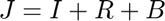
where 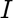 is a data misfit term, 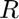 a regularisation term, and 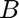 a barrier term.
The data mistfit term is on the form
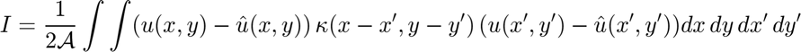
where 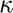 is a (inverse) covariance kernel, 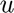 are model output quantity, and 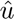 measurements of that quantity.
It is assumed that data errors are spatially uncorrelated, i.e.
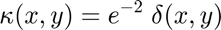
where 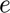 are data errors. Therefore
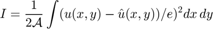
is dimentionless.
In FE context:
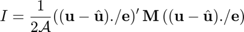
here  etc, are vectors and we used the ./ matlab notation to indicate element wise division.
etc, are vectors and we used the ./ matlab notation to indicate element wise division.
The derivative of the data mistfit term with respect ot is
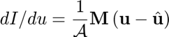
The regularisation term is written in descrete form as
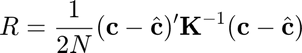
where is a covariance matrix and 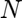 the number of elements in . is dimentionless
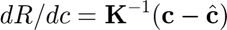
Area=TriAreaTotalFE(MUA.coordinates,MUA.connectivity); switch lower(CtrlVar.MisfitFunction) case 'uvdiscrete' % % residuals=[us ; vs]-[Meas.u;Meas.v]; % Idata=residuals'*(Cd\residuals)/2; % dIduv=Cd\residuals; Idata=(us-Meas.us)'*(Meas.usCov\(us-Meas.us))/2+(vs-Meas.vs)'*(Meas.vsCov\(vs-Meas.vs))/2; dIdu=Meas.usCov\(us-Meas.us) ; dIdv=Meas.vsCov\(vs-Meas.vs); dIduv=[dIdu(:) ; dIdv(:)]; case 'uvintegral' % %fprintf(' misfit integral \n ') % [n1,n2]=size(Cd); % sqrtmCd= % res=sqrtmCd*[us-Meas.u ; vs-Meas.v]; % ures=res(1:MUA.Nnodes) ; vres=res(MUA.Nnodes+1:end) ; % this sqrt only works for diagonal sparse matrices % isdiag was introduced in R2014a if isdiag(Meas.usCov) squs=1./sqrt(spdiags(Meas.usCov)); usres=squs.*(us-Meas.us); else error('MisfitFunction:Cov','Data covariance matrices but be diagonal') end if isdiag(Meas.vsCov) sqvs=1./sqrt(spdiags(Meas.vsCov)); vsres=squs.*(vs-Meas.vs); else error('MisfitFunction:Cov','Data covariance matrices must be diagonal') end M=MassMatrix2D1dof(MUA); Idata=full(usres'*M*usres/2+vsres'*M*vsres/2); dIdu=squs.*(M*usres); dIdv=sqvs.*(M*vsres); dIduv=[dIdu(:);dIdv(:)]; if ~isreal(dIduv) save TestSave ; error('MisfitFunction:dIduvNoReal','dIduv is not real! Possibly a problem with covariance of data.') end % Two methods resulting in the same answer % method 1: % Method 2 % uNorm=sum(fgIntElementwise(connectivity,coordinates,nip,ures,ures,CtrlVar))/2; % vNorm=sum(fgIntElementwise(connectivity,coordinates,nip,vres,vres,CtrlVar))/2; % Idata2=(uNorm+vNorm)/Area; % Sx=StiffnessMatrixSx2D(coordinates,connectivity,nip,CtrlVar); % Sy=StiffnessMatrixSy2D(coordinates,connectivity,nip,CtrlVar); % % Errors=1./sqrt(spdiags(Priors.Cov,0)); Cres=(C-Priors.C)./Errors ; % Errors=1./sqrt(spdiags(Priors.CovAGlen,0)); Ares=(AGlen-Priors.AGlen)./Errors ; % % M=MassMatrix2D1dof(coordinates,connectivity,nip); % % IRegC=c0* Cres'*M*Cres/2+c1*Cres'*(Sx+Sy)*Cres/2; % IRegAGlen=a0* Ares'*M*Ares/2+a1* Ares'*(Sx+Sy)*Ares/2; % % IRegC=IRegC/Area; % IRegAGlen=IRegAGlen/Area; %Idata=FEmisfituv(ures,vres,coordinates,connectivity,nip); Idata=Idata/Area; dIduv=dIduv/Area; otherwise error(' what case? ' ) end Idata=CtrlVar.MisfitMultiplier*Idata; IRegC=Calc_IRegC(CtrlVar,Priors.CovC,C,Priors.C); IRegAGlen=Calc_IRegdAGlen(CtrlVar,Priors.CovAGlen,AGlen,Priors.AGlen); IBarrierC=Calc_IBarrierC(CtrlVar,C); IBarrierAGlen=Calc_IBarrierAGlen(CtrlVar,AGlen); % scalings Idata=Idata*CtrlVar.AdjointfScale; IRegC=IRegC*CtrlVar.AdjointfScale; IRegAGlen=IRegAGlen*CtrlVar.AdjointfScale; IBarrierC=IBarrierC*CtrlVar.AdjointfScale; IBarrierAGlen=IBarrierAGlen*CtrlVar.AdjointfScale; J=Idata+IRegC+IRegAGlen+IBarrierC+IBarrierAGlen; %fprintf('MisfitFunction: J=%-g \t Idata=%-g \t IRegC=%-g \t IRegAGlen=%-g \t IBarrierC=%-g \t IBarrierAGlen=%-g \n',... % J,Idata,IRegC,IRegAGlen,IBarrierC,IBarrierAGlen)
end